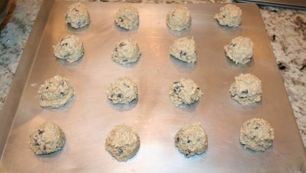
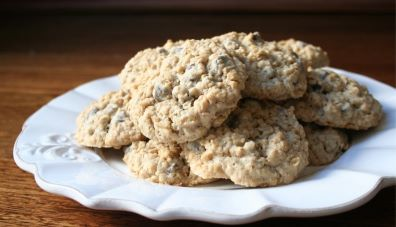

Oatmeal Raisin Cookies
Cookies are one of my favorite foods. Here is an old-schooled recipie for non low fat cookies.
Ingredients
- 1 Cup unsalted butter, softened to room temperature
- 1 Cup packed light or dark brown sugar
- 1/4 Cup granulated sugar
- 2 Large eggs
- 1 Tablespoon pure vanilla extract
- 1 and 1/2 Cups all-purpose flour
- 1 Teaspoon baking soda
- 1/2 Teaspoon salt
- 3 Cups old-fasioned whole rolled oats
- 1 Cup raisins
Method
- Using a mixer, cream the softened butter and both sugars together until smooth. Add eggs and mix 1 minute. Add the vanilla and molasses and mix until combined. Set aside.
- In a separate bowl, toss the flour, baking soda and salt together. Add to the wet ingredients and mix on low until combined. Beat in the oats and raisins. Dough will be thick, yet very sticky. Chill the dough for 30-60 minutes.
- Preheat oven to 350F. Line two large baking sheets with parchment paper or silicone baking mats. Set asode.
- Roll balls of dough and place 2 inches apart on the baking sheets. Bake for 12-13 minutes until lightly browned on the sides. The centers will look very soft and undone. Remove from the oven and let cool on baking sheet for 5 minutes before transferring to a wire rack to cool completely. The cookies will continue to 'set' on the baking sheet during this time.
Results in Photos
Making the Dough:

Putting the Dough on the Sheet:
The end Result:
